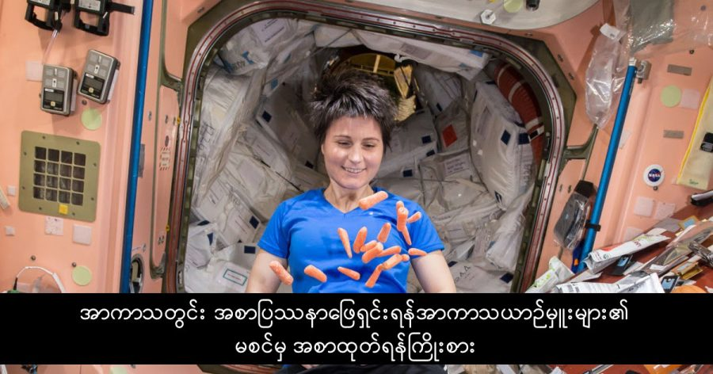

အပြည်ပြည်ဆိုင်ရာ အာကာသစခန်းပေါ်က အာကသ ယာဉ်မှူးများဟာ ကျင်ငယ်ရည်က ပြန်ပြီး သန့်စင်ထားတဲ့ သောက်ရေကို သောက်ကြရပါတယ်။ ဘာကြောင့်လဲဆိုတော့ အာကာသထဲကို အစားအစာနဲ့ ရေအလုံအလောက် သယ်သွားဖို့ဆိုတာ မလွယ်လို့ပါ။
အင်္ဂါဂြိုလ်ကို လူလွှတ်ဖို့ ကြိုးစားနေတဲ့ သိပ္ပံပညာရှင်တွေအနေနဲ့ လုံလောက်တဲ့ အစားအစာ ဘယ်လိုသယ်သွားရမလဲဆိုတာ ပဿနာကြီး တစ်ခုဖြစ်နေပါတယ်။ ပင်ဆယ်ဗေးနီးယားပြည်နယ် တက္ကသိုလ်က သိပ္ပံပညာရှင်များဟာ ဒီပြဿနာကို ဖြေရှင်းဖို့ အာကသ ယာဉ်မှူးများရဲ့ မစင်ကနေ အစားအစာ ပြန်ထုတ်နိုင်မယ့် နည်းလမ်းကို ရှာဖွေတွေ့ရှိခဲ့ ကြပါတယ်။
ရွံစရာ ကောင်းတယ်လို့ သင်ထင်ပါသလား။ ဒီသိပ္ပံပညာရှင် တစ်စုရဲ့ ကြိုးစား အားထုတ်မှုဟာ ချီးကျူးစရာ ကောင်းပေမယ့် သူတို့နည်းရဲ့ ရလဒ်က မစင်ကို စားလို့ရတဲ့ အခြေအနေထိတော့ ဖန်တီးမပေးနိုင် သေးပါဘူး။ သူတို့ရဲ့ နည်းက မစင်ထဲက ရေနဲ့ အခဲတွေကို လေမဲ့ဘက်တီးရီးယားတွေ သုံးပြီး ချေဖျက်တဲ့ နည်းပဲ ဖြစ်ပါတယ်။
ဒီနည်းက အောက်စီဂျင် မလိုတဲ့ အတွက် အာကသထဲမှာ ရှားပါးတဲ့ အောက်ဆီဂျင်ကို သုံးစွဲစရာ မလိုတော့ပါဘူး။ ကျွန်တော်တို့ အစာစားပြီး အစာအိမ်နဲ့ အူထဲမှာ အစာချေတဲ့ ပုံစံနဲ့ ခပ်ဆင်ဆင် တူတဲ့ နည်းဖြစ်ပါတယ်။ အူထဲက အစာခြေတဲ့ ဖြစ်စဉ်မှာ ထွက်လာတဲ့ မိသိန်းဓါတ်ငွေ့ကို အူထဲက (Methylococcus capsulatus) ဘက်တီးရီးယား တွေက သုံးပြီး အစာခြေသလိုမျိုးပေါ့။
အတုပြုလုပ်ထားတဲ့ မစင်က နေ ဒီနည်းသစ်ကို သုံးပြီး စမ်းသပ်ကြည့်တဲ့အခါ ထွက်လာတဲ့ ရလပ်ကတော့ ဇီဝအစိုင်အခဲတွေပဲ ဖြစ်ပါတယ်။ ဒီဇီဝ အစိုင်အခဲမှာ ပရိုတင်း အသားဓါတ် ၅၂ ရာခိုင်နှုန်းနဲ့ အဆီ ၃၆ ရာခိုင်နှုန်း ပါဝင်ပါတယ်။ ဒါဟာ အနာဂါတ် အာကာသ ယာဉ်မှူးတွေ အာကာသထဲမှာ စားမယ့် အစားအစာ ပါပဲ။
ဒီသိပ္ပံပညာရှင် အဖွဲ့ရဲ့ ခေါင်းဆောင် ပရော်ဖက်ဆာ ခရစ်စတိုဖါဟောက်စ် ကတော့ “နည်းနည်းတော့ ထူးဆန်းနေတယ်” လို့ ဝန်ခံပါတယ်။ “ဇီဝအဆီတွေကို စားတဲ့ အဏုဇီဝ ပိုးတွေလိုပေါ့” လို့ သူကဆက်ပြောပါတယ်။ အာကာသ မစင် အစားအစာကလဲ အရသာရှိလာမှာပါတဲ့။
ဒီပြန်လည်သန့်စင်စာဟာ အဟာရတွေနဲ့ ပြည့်ဝနေရုံမကဘူး ပြန်လည်သန့်စင် ရတာလဲ မြန်ဆန်ပါတယ်။ အချိန် ၁၃ နာရီအတွင်းမှာ မစင်ရဲ့ တဝက်ကျော်ကျော်ကို ပြန်လည် သန့်စင် နိုင်ပါတယ်။ ဒါဟာ အခုလက်ရှိ ကျင်ငယ်ကနေ သောက်ရေပြန်ထုတ်တဲ့ ဖြစ်စဉ်ထက် ပိုမြန်ပါတယ်။ “ခရမ်းချဉ်သီးတို့၊ အာလူးတို့ စိုက်တာထက် အများကြီး မြန်တာပေါ့ဗျာ” လို့ သူကဆက်ရှင်းပြပါတယ်။
Source: Engadget | Scientists explore using astronaut poop to make space food
သိပ္ပံပညာရှင်များက အာကာသယာဉ်မှုးများ၏ မစင်မှ အစာထုတ်ရန် သုတေသနပြု

February 1, 2018
Other Posts
- တိရစ္ဆာန်တွေ အရောင် မြင်နိုင်သလား
- မစ်ကီးဝေး ဗဟိုနားမှာ အရက်ပြန် ရှာတွေ့
- ဘလက်ဟိုး တွင်းနက်က ကြယ်တလုံးကို ဝါးမြိုလိုက်တဲ့ ဖြစ်စဉ်
- စကြာဝဠာ အစွန်းက ဂလက်ဆီတွေဟာ အလင်းထက် မြန်တဲ့ နှုန်းနဲ့ ပြေးနေကြသလား
- ရှေးအီဂျစ်တွေဟာ အသား ဖြူသလား မည်းသလား
- မဟာပိရမစ်ကြီး အတွင်း လှို့ဝှက်ခန်း ရှာတွေ့
- ဘာ့ကြောင့် အချိန်က အာကာသထဲမှာ ပိုမြန်ရတာလဲ
- အမြင်အာရုံလှည့်စားတဲ့ ဓါတ်ပုံရဲ့ လှို့ဝှက်ချက်
- မြန်မာပြည်မှာ ရှာတွေ့ ခဲ့တဲ့ နှစ် ၉၉ သန်းကျော်က ဒိုင်နိုဆောသွေး စုပ်ထားတဲ့ လှေး
- သုက်ပိုးကို ရေကူးနိုင်အောင်ကူမယ့် နာနိုစက်ရုပ်